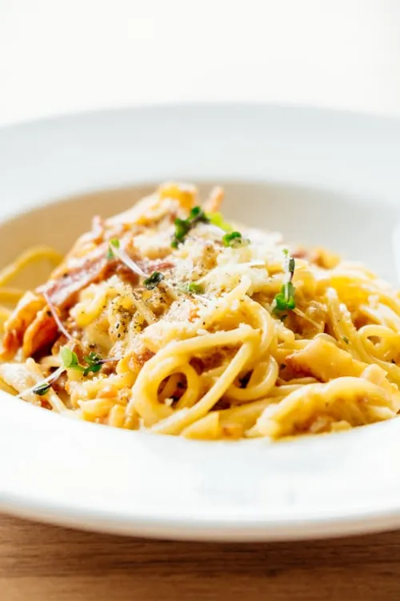

My developed Spaghetti Carbonara recipe

Description:
This is my home spaghetti Carbonara recipe, which I have developed after reading many recipes,
watching many recipe videos and cooking it myself at home.
The conclusion of my probing and experimenting each time
I used to cook his for my family is this tried(a lot) and tested recipe
It isn't that hard but it takes some fine touch to accomadate it too your home environment
Ingredients(4 servings):
- 6 eggs
- (optional) 2 egg yolks, otherwise 7 eggs instead of 6
- 500grams of spaghetti
- 250g of pork belly, cubed bacon or other ham
- 75g pecorino cheese + some extra to serve
- 75g parmeggianno reggianno cheese + some extra to serve
- 6 cloves garlic
- Butter
- Pepper
- Salt
Steps:
- In a large bowl(would recommend large, as smaller bowls might get overfilled or crowded)
add enough pepper to make it's presence significant(or to taste) to the eggs and egg yolks,if used.
- In a large enough plate, mix the pecorino and parmegianno cheeses so that the are evenly mixed.
- Cook pasta in rolling boiling water with 2 tsp salt and a bit of olive oil till al-dente.
- Slowly add the cheese mixture to the bowl with the pepper and eggs and whisk till it becomes a homogenous mixture.
You add it slowly so that no clumps form and the whisking is easier.
- Cut the ham into rectangular pieces(small width but long), skip if using cubed bacon.
- Heat a small saucepan to medium-high and add Butter to cover.
- Add ham to the saucepan and cook till golden brown.
- Just before the ham turns golden born add garlic till it turns golden along with the ham.
- After pasta is cooked, immediately move pasta with tongs to a large mixing bowl(don't worry if pasta water carries over, this is good)
and and mix with ham, garlic and the homogenous mixture.
- When pasta ets dry, aadd pasta water and continue mixing
- Serve immediately with sprinkled cheese!
If you liked this recipe, check out my other recipes here!